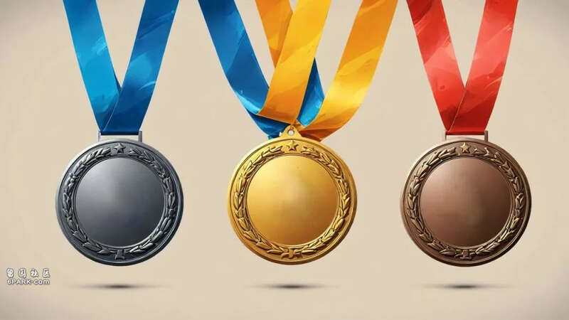
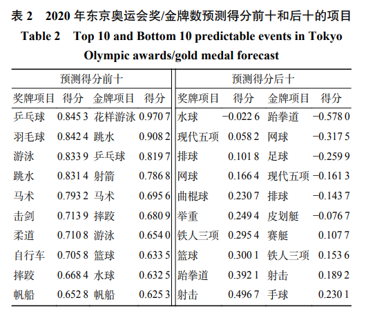
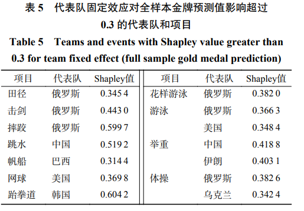
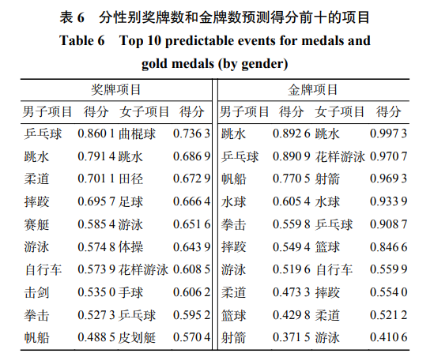
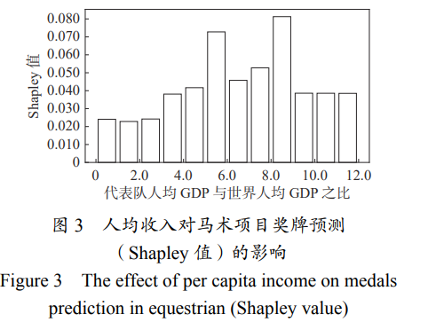
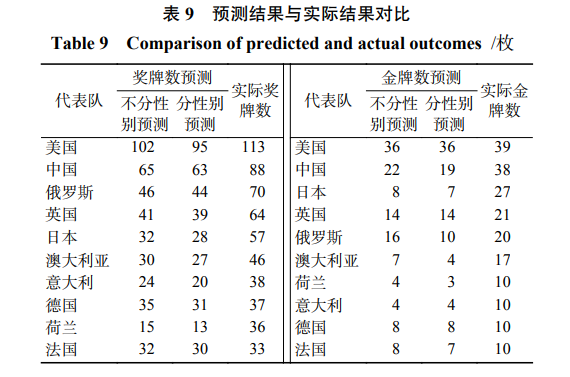

和所有竞技体育比赛一样，奥运会的魅力之一在于其结果的悬念性。例如，本届巴黎奥运会乒乓球男子单打1/4决赛中，樊振东对战张本智和，在落后两局的情况下完成逆转；又或是一路遥遥领先的射击选手在最后一枪脱靶，痛失金牌。一场结果已知的比赛重播，对观众的吸引力会大大降低。然而，一些代表队在特定项目上非凡的实力，又让我们对其获得奖牌或金牌给予了厚望，例如我国的跳水。
那么，奥运会的奖牌数量可以被预测吗？不同项目的可预测性存在多大差异呢？为了搞清楚这个问题，我们团队进行了一项研究。
太多因素能影响奖牌数量了！
预测奥运成绩并不是一件简单的事情。我们知道，一个国家或地区能够获得多少奖牌，可能和很多因素有关。比如有研究者曾发现一个代表队所在国家的人口规模越大、人均GDP越高、是本届比赛的东道国等，其整体获得奖牌的数量都会更多。
于是我们决定使用“随机森林模型”来进行预测。简单来说，随机森林模型就是三个臭皮匠顶个诸葛亮，就像是一个由许多“树”组成的团队，每棵树都对结果有自己的看法，最后把森林中树的预测结果做一个平均，以此来做出最准确的预测。
因此这个模型的好处是，首先，它能够防止预测的极端化。因为总的预测结果是综合每棵树的预测得出的，减少了使用单一模型预测的误差，提高了准确性。第二是适用范围广，这是一个很成熟的模型，在社会科学领域方面的应用很广泛。第三是抗干扰能力强。即使数据中有些错误或不正常的值，它也能保持好的表现，不那么容易出错。

预测奥运成绩并不是一件简单的事情丨图虫创意在我们的模型中，我们既考虑了已经被文献中讨论的因素，比如一个国家的人均GDP与世界平均水平的比较、国家人口占全球人口的比例，以及这个国家是否是奥运会的东道国。同时，为了使预测更加准确，我们还考虑了一个代表队过去在特定项目上的成就，也就是他们在上一届奥运会上的表现。
接下来，我们分析了从1992年到2021年，八届夏季奥运会的大量数据，总共涵盖了29个不同的运动项目和超过18000条比赛成绩记录。我们用1992年到2016年的奥运会数据来“训练”我们的模型，然后用2020年（实际2021年举办）东京奥运会的数据来测试我们的模型是否有效。就像训练一个运动员一样，我们需要给他们足够的时间（数据）来学习和提高，然后在比赛中检验其能力。
通过这种方法，我们希望能够更好地理解不同奥运会项目结果可预测性的差异，以及是什么让一个代表队的运动员在奥运会特定项目上表现出色，也许这还能帮助我们找到培养优秀运动员的新方法。
通过机器学习，我们得出了哪些结论？
我们发现奖牌可预测性强（排前十）的项目分别是乒乓球、羽毛球、游泳、跳水、马术、击剑、柔道、自行车、摔跤、帆船。金牌可预测性强（排前十）的项目分别是花样游泳、跳水、乒乓球、射箭、马术、摔跤、游泳、篮球、水球、帆船。
与此同时，奖牌可预测性最弱的10项运动是水球、现代五项、排球、网球、曲棍球、举重、铁人三项、篮球、跆拳道、射击。金牌可预测性最弱的10项是跆拳道、网球、足球、现代五项、排球、皮划艇、赛艇、铁人三项、射击、手球。

奖牌和金牌可预测性前十和后十的运动项目丨参考资料1一个特定奥运项目奖牌或金牌的可预测性，主要取决于参与代表队的多少、各代表队水平的分布、以及比赛项目本身的偶然性。
一方面，项目的可预测性强主要是因为有一个或少数几个代表队在该项目中具有超强实力。例如中国在乒乓球项目上强大的综合实力导致奖牌的可预测性较强；而在花样游泳项目上，俄罗斯队在双人赛和团体赛上连续6届蝉联冠军，如果参赛，俄罗斯在花样游泳项目上得金牌的可预测性最强。
而项目的可预测性弱主要是因为参与该项目的代表队众多，同时实力较为接近，导致竞争激烈。例如在足球项目上有19个代表队都曾获得金牌或奖牌。此外，一些项目（如射击）在比赛时运动员发挥的或然性较高、表现较难预料，其金牌和奖牌的可预测性都位居后十。
另外有趣的是，奖牌的可预测性和金牌的可预测性也存在差异。例如在金牌的可预测性上篮球位居第八，在奖牌的可预测性上则位于倒数第八。这主要是因为历史上曾经有16个代表队获得奖牌，但只有4个代表队（美国、独联体、阿根廷和拉脱维亚）夺得金牌。同时，在篮球项目产生的18枚金牌中，独联体、阿根廷、拉脱维亚各自只获得1枚金牌，其余15枚金牌都为美国队所得。
进一步分析，量化传统优势和性别差异
特定代表队在某些项目上具有一定的传统优势，该如何量化这种优势呢？虽然我们在训练模型的时候已经加入了代表队在上一届比赛中是否进入过前三或前八，一定程度上捕捉了该代表队的优势。但这无法反映一个国家长期的历史传统。
我们进一步加入了代表队的固定效应，也就是一个国家在特定项目上难以被明确分析但又客观存在的“传统优势”，以揭示代表队潜在特征对其奥运表现的影响。在奖牌预测方面，“传统优势”比较大的组合为：韩国-射箭、美国-游泳、俄罗斯-体操、俄罗斯-摔跤等。在金牌预测方面，这些组合为：中国-跳水、俄罗斯-体操、韩国-跆拳道等。同时，对于金牌预测而言，传统优势特别大的组合数目远远少于对奖牌而言的预测。这表明，某些代表队在某些项目上拥有强大的实力，但获得金牌的难度远远大于获得奖牌的难度。

“传统优势”对运动员奥运表现的影响丨参考资料1奥运会是性别平等的比赛，大多数项目都是既有男子项目，也有女子项目。在东京奥运会上，共有146个男子项目、137个女子项目和15个男女混合项目。从奥运项目表现看，我国女运动员取得的成绩好于男运动员。在东京奥运会中国代表团所获的38枚金牌中，女子项目22枚金牌，男子项目13枚金牌，混合项目3枚金牌。根据联合国公布的性别平等指数（GII，该数字越小代表越平等），我国GII从1998年的0.287降到了2022年的0.186。有研究表明，女性赋权运动增加了该国女性参与奥运会和在其中获得奖牌的概率。
对于比赛结果，我们进一步区分了男女项目后，将数据分为两类重新训练了模型。在总得分前十的项目中，从预测结果看，平均而言，女子项目的模型预测质量远高于男子项目。在女子入围的6个项目中，有5个得分超过了90%，其中有3个超过了95%。这也从侧面印证了男子项目的竞争性要强于女子项目，导致其结果的不可预测性更强。男子项目的高水平运动员人数更多、更分散在各个代表队，对男子项目的金牌预测更加困难。这可能源于男女在竞技体育参与意愿、赞助商数量等因素。

分性别奖牌数和金牌数预测得分前十的项目丨参考资料1希望“种子”和“土壤”相辅相成
虽然一个国家人口数量越多、人均 GDP越高，该国获得的奥运奖牌一般越多，但是不同项目对经济发展水平的依赖程度是有差异的。对于一些项目（如马术）而言，强大经济实力的门槛作用至关重要。例如，马术项目的参与代表队大多出现在人均GDP是世界人均GDP5倍以上的国家或地区，人均收入较低的国家或地区对马术项目奖牌的预测作用很小。
但对于另外一些项目，例如跳水，发达经济体和发展中经济体都有所参与，这表明其对国家整体经济水平的依赖程度较小。此外，例如网球项目商业价值高，历史数据来看，大部分参与选手都来自于发达经济体。但随着我国经济实力的提升，也涌现出了像李娜、郑钦文这样优秀的网球运动员。

人均收入对马术项目奖牌预测的影响丨参考资料1培养高水平运动员或是人才既需要足够多的群众基础作为“种子”，也需要一国人均经济收入达到一定程度作为培养的“土壤”，还需要高效的人才选拔及培养系统。不同项目对经济条件的依赖不同。因此，作为一个快速发展的国家，我们应根据经济发展水平调整竞技体育发展战略，找准赛道。相信随着我国经济水平的发展，不仅限于体育，我国各个领域的顶尖人才会越来越多的涌现出来。
最后
将我们研究的预测结果和东京奥运会的真实数据相对比，我们发现无论是奖牌还是金牌，无论是使用区分性别还是没区分性别的数据，对于排名前十的代表队，机器学习的方法都低估了他们真实获得的奖牌或金牌。也就是说，即使我们考虑了人口、经济发展水平、上届比赛的成绩、传统优势之后，奖牌和金牌还是更为集聚在前几位的代表队中。你对奥运会奖牌的预测会比机器学习的方法做的更好吗？
